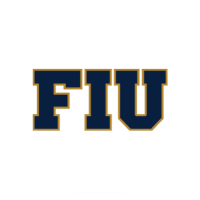
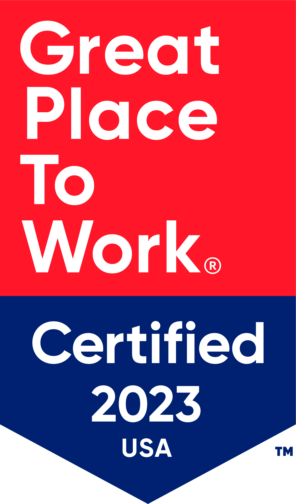

Kristy Hamlin
Software Developer
Top-achieving Software Development graduate with experience in Java, Python, Object-Oriented Programming, and Agile Development. Bringing highly-developed professionalism and teamwork skills from a career in scientific research, and positioned to thrive in software development environments where communication, critical thinking, and attention to detail are key. Known for being a team-player and culture-setter.
Transitioning careers due to a love for computers and programming!
Education
BS in Computer Science
Florida International University
2021 - 2024
Summary
- Graduated July 2024
- GPA: 3.98
Skills and Coursework
- Java, Python, C, HTML, CSS
- Data Structures, Algorithms, Object-Oriented Design
- Agile Development Methodologies, SDLC
- Microsoft Power Apps and Power Automate
- Machine Learning with Python, sklearn, matplotlib
- Artificial Intelligence
- Operating Systems
- Relational Database Design, pgAdmin, PostgreSQL
- Software Testing, Unit Testing, JUnit, UML Diagrams
- Git, GitHub
- Human-Computer Interaction, User-Centered Design
BS in Biochemistry & BA in English Literature
Univeristy of Miami
2011 - 2015
Highlights and Recognitions
- Magna Cum Laude, Honors
- Recipient of UM Full-Tuition Isaac B Singer Scholarship for Academic Excellence
Skills and Coursework
- Cell Biology, Cellular Structures, Biochemical Pathways
- Genetics, Gene expression, Protein Folding, Protein Structures
- Evolutionary Biology
- Basic Chemistry, Organic Chemistry
- Reading complex literary works
- Communicating nuanced ideas clearly and effectively in writing
Featured Projects
View selected projects below.
Enhancing FIU's STARS Tutoring Application
STARS (Students in Technology, Academia, Research, and Service) is a real organization run by Associate Teaching Professor Dr. Patricia McDermott-Wells at FIU. While STARS runs services dedicated to mentoring and leadership, its most complex offering - and most utilized - is its tutoring service. Every semester, Dr. Wells spends hundreds of hours manually administrating this program. The purpose of the STARS Admin App is to automate and facilitate as much of this work as possible.
The development of this system began in Spring 2024, and was inherited by my Capstone II group in Summer 2024. I am proud to say that I am the leader of the team. In the video linked below, you will learn about our work on this project, which uses Microsoft Power Apps. Although the system has not been deployed, we have made significant progress adding functionality.
Project Video Project ReportPredicting Miami Home Prices using Decision Trees
Two of my favorite courses were Machine Learning and AI, in which we learned the theory and equations behind many ML and AI algorithms - from K Nearest Neighbors to MiniMax. In this project, I put my learning into practice by building a Machine Learning model to predict Miami home prices using the Decision Tree Regressor from Sklearn.
My model achieved an R-Squared = 0.78, and an MAE on the testing set = $52,000. For comparison, the MAE is small relative to the standard deviation of the data (STD of test set = $193,000), meaning the prediction is fairly accurate given such variable data. This is sensible, seeing as real estate applications have a high level of noise.
Project Video Project ReportAdditional Coding Projects

Visit my GitHub profile to see code and documentation for these projects, as well as additional selected projects!
Kristy's GitHubWork Experience
I have nine years of work experience in science and research, culminating in my current position as a Lab Supervisor. With plenty of time spent in reading, writing, presenting, and critical thinking, I am poised to be an effective member of a software development team.
Below, see some of my main responsibilities as well as links to videos I have made for BioTissue.
Lab Supervisor
BioTissue
07/2022 - Present


Lab Supervisor in Research and Development in charge of Internal Reference Material production.
Key Contributions:
- Led team of scientists to ensure fast-paced delivery of qualified samples to partner studies at Johns Hopkins University as well as international collaborators in Taiwan and Japan consistently for over 2 years.
- Collaborated with CTO and co-founder Dr. Scheffer Tseng to write ongoing company research reports, analyzing historical data and resulting in a comprehensive report of IRM characteristics and potential areas for optimization.
- Spearheaded research project to optimize the Western Blot Assay, successfully resolving multiple key problems encountered by scientists. Generated technical documentation on the experiments performed, including data and results.
- Extensive experience mentoring and training young scientists in the lab
- Successfully prepared for lab audits, ensuring all necessary protocols, equipment, and documentation were compliant with regulatory standards
- Team leader of "Great Place to Work" Initiative team in R&D. During my time working on this, which is ongoing, R&D's survey ratings of the GPTW statement rose from 67% to 83%. Surveyed R&D employees regarding their desires and thoughts on improvements, and insitituded changes including a quiet room and monthly "Thank You" awards. In 2024, I created and began the "Nobel Peace Prize in Science" award.
- Site Owner of the Research and Development BioSphere page (company intranet site). Early on, was the Content Creator with most likes and most views in the Company.
- Creator and Editor of various internal videos. Created the 2023 R&D Department's Spirit Week video, an ad for the Financial Wizard's Club (an employee club dedicated to learning about financial hygiene), an internal documentary about a new optical product called CAM360, and more. (See below)
Learn More
R&D Spirit Video Finance Club Video CAM360 Docu-VideoResearch Associate
BioTissue
08/2018 - 07/2022
Key Contributions:
- Create and maintain detailed inventory log of company IRM samples, guaranteeing documentation and traceability of preparation and experiments
- Conducted Western Blots, Protein Assays, and other lab experiments and analyzed results, utilizing data to qualify internally produced samples and support company stability studies
Research Associate
Bascom Palmer Eye Institute, Hackam Lab
03/2016 - 08/2018
Key Contributions:
- Produced and analyzed data on the impact of inhibiting the innate immune system on retinal degeneration in a rodent model, searching for therapies to translate to human treatment.
- Performed flow cytometry, RNA seq, RT-PCR, immunohistochemistry, fluorescent imaging, TUNEL staining, Electroretinograms, Optical Coherence Tomography, and Optokinetics testing.
- Mentored and directed a team of Ophthalmology masters students, graduate students, undergraduate students, full-time interns, new hires, and volunteers, and coordinated efforts to gather data on the project over the span of 2.5 years.
- Performed all animal handling, surgeries, breeding, genotyping, and treatment injections for the project.
- Wrote first draft of scientific paper on findings.
Skills: Recap and Highlights
Software Development
- Java, C, C++, Python
- Frontend Web Development, HTML, CSS
- Relational Database Design and SQL
- Computer Architecture
- Software Testing Theory, JUnit
- Data Structures & Algorithm Design
- Human-Computer Interaction
- Version Control with Git and GitHub
- Microsoft Power Apps & Power Automate
- Machine Learning & Artifician Intelligence
- UML Diagrams, Use Case Diagrams, State Diagrams
Science
- User Specification Requirements for 21 CFR Software
- Critical Thinking
- Writing Reports
- Western Blotting, Densitometry
- Protein Purification via Density Gradient Centrifugation
- Elisa
- qPCR
- Mouse Handling, IP injections, Ocular Dissection
- Optical Coherence Tomography, Optokinetic Testing, Electroretinograms
- Scientific Writing
- Assay Development
- GDP, GLP, GMP
- FDA Regulations
- 21 CFR Part 11 Compliance
- Hazard Communication, Bloodborne Pathogen Safety, Biohazard Waste Disposal
Soft Skills
- Teamwork
- Accountability
- Communication
- Critical Thinking
- Time Management
- Leadership
- Public Speaking
- Creativity
Hard Skills
- Fluent in Spanish
- Technical Writing
- Creative Writing
- Facilitative and Civil Leadership
- Good Documentation Practices
- Conducting Meetings
- Hitfilm, iMovie
- Photoshop, Canva